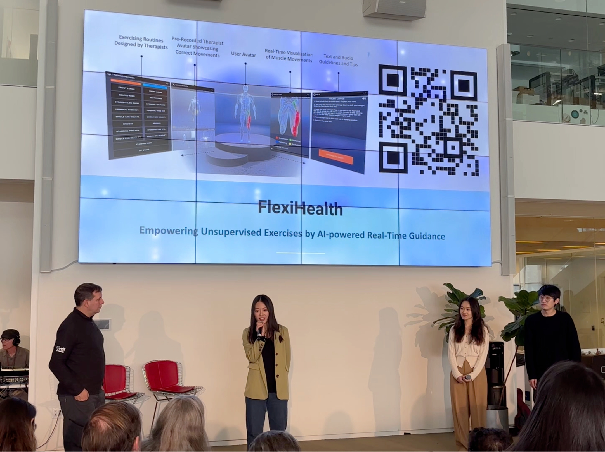
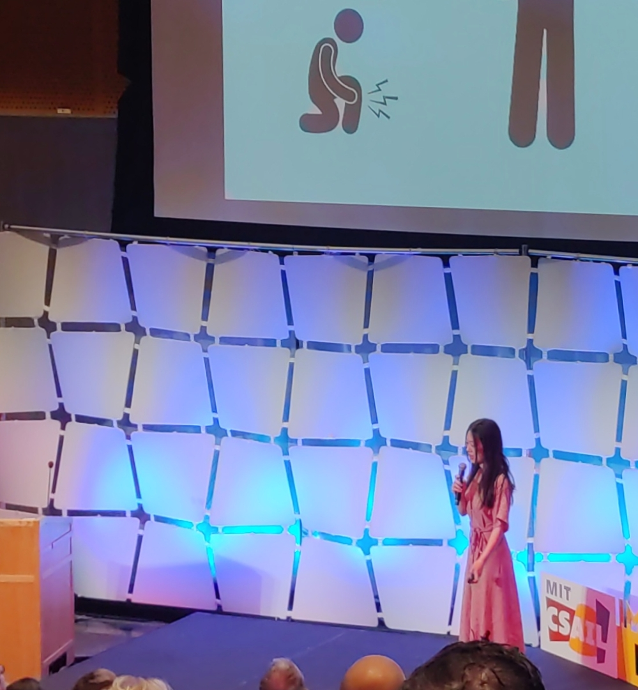
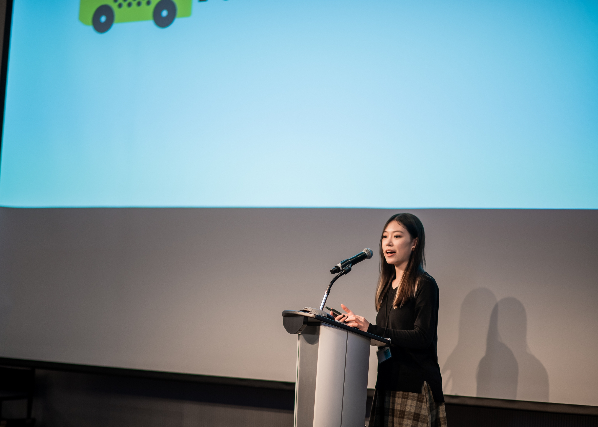

Yan Luo
Ph.D. Candidate @ COMP, PolyU & Media Lab, MIT

77 Massachusetts Ave, Cambridge, MA 02139
Hi, I am Yan! I am a fourth-year PhD candidate. My research interests lie at the intersection of technology and social impact, specifically utilizing deep learning methods to model human activity and capture land use patterns in cities. My aim is to determine the significance of these factors and how they can inform the design of future cities.
Aside from my academic pursuits, I am deeply interested in tech startups and their potential to transform industries. In my free time, I am a passionate dancer with expertise in hip-hop, jazz, and urban dance. Additionally, I love traveling and exploring different cultures, which further informs my work in understanding the complex dynamics of cities.
Collaborations on related topics are welcomed. Please feel free to drop me an email.
EDUCATION
- Ph.D., Computer Science, The Hong Kong Polytechnic University, Sep 2019 - Expected Nov 2023
- B.S., Remote Sensing, Wuhan University, Sep 2015 – Jun 2019
RESEARCH EXPERIENCE
- Massachusetts Institute of Technology, Media Lab, Jan 2023 - Expected Sep 2023
- Hong Kong Science and Techonolgy University, TRS Team (RGC Funding: HK$ 33.332 million), Jan 2021 - Expected Sep 2023
- Microsoft Research Lab - Asia, Oct 2022 - Jan 2023
- Huawei Noah’s Ark Lab, Jul 2022 - Oct 2022
- Didi, May 2020 - Jan 2021
- Peking University, School of Earth and Space Sciences, Nov 2019 - Dec 2019
- King Abdullah University of Science and Technology, Division of Computer Science, May 2019 - Aug 2019
SELECTED HONORS
- KDD Student Award, 2023
- Schmidt Science Fellows 2024 Nominee, 2023
- Hong Kong PhD Fellowship, 2019 - 2023
- HKSAR Government Scholarship Fund – Talent Development Scholarship, 2022
- SIGIR Student Travel Grant, 2022
- PolyU Student Innovation and Entrepreneurship Scholarship * 2, 2022
- The Stars of Self-Improvement of Chinese National University Students, 2019
- Top 20 Influential Students of Wuhan University (珞珈风云学子), 2019
- Excellent Undergraduate Thesis of Wuhan University, 2019
- Chinese National Scholarship, 2018
- Champion of JD Campus Individual Street Dance Competitio, 2018
- Runner-up of World Hip Hop Dance Championship (Hubei Divison), 2018
- Chinese National Encouragement Scholarship, 2017
NEWS (from 2023)
[Dec 2023] Pitched at MIT AI4Impact Demo Day and got Silver Prize.

[Nov 2023] My startup is selected into MIT DesignX second round. (20/300+)
[Nov 2023] Our paper “Learning to Aggregate Multi-Scale Context for Instance Segmentation in Remote Sensing Images” is accepted by IEEE Transactions on Neural Networks and Learning Systems.
[Oct 2023] Invited talk at University College London, CASA & Spacetime Lab.
[Oct 2023] Invited talk at Purdue University, School of Industrial Engineering.
[Oct 2023] My startup obtain non-dilutive funding from MIT Sandbox.
[Sep 2023] Invited talk at Wuhan Univeristy, Remote Sensing and Information Engineering School.
[Aug 2023] Our full paper “Timestamps as Prompts for Geography-Aware Location Recommendation” is accepted for publication in the CIKM 2023 proceedings and for oral presentation at the conference.
[Jul 2023] Selected to join Qiming Summer program Catalyst 2023.
[Jul 2023] I recieve KDD Student Award.
[Jun 2023] Selected to pitch at MIT CSAIL Imagination in Action event for our startup.

[Jun 2023] Our startup is admitted into MIT I-Crops program.
[May 2023] Nominated by PolyU for the Schmidt Science Fellows 2024.
[Apr 2023] Our POC is admitted by HK Cyberport University Partnership Programme.
[Apr 2023] My demo for flow generation is released. I presented it on MIT Media Lab’s member week!
[Apr 2023] Check the video of my dance show (audition version), which is selected for MIT SpringFest (3 out of 18).
[Apr 2023] Selected into McKinsey Insight Program (32 out of 300+).
[Mar 2023] Invited to serve as a Program Committee Member for NeurIPS 2023.
[Mar 2023] Presented a talk titled “I Know Where You Want to Go Next: Contrastive Preference Modeling for Next Location Recommendation” at the American Association of Geographers Annual Meeting 2023.
[Mar 2023] Selected as a student representive to participate in MIT Sustained Dialogue Camp.
[Mar 2023] Selected to pitch at the MIT Asia Business Conference Startup Showcase (top 5 out of 20+).

[Jan 2023] Invited to serve as a Program Committee Member for CVPR 2023.
[Jan 2023] My startup is granted by Hong Kong Science and Techonolgy Park for pre-incubation program.